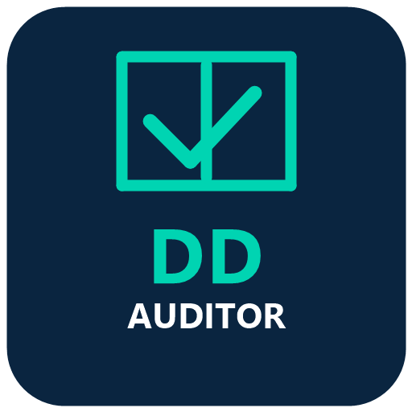
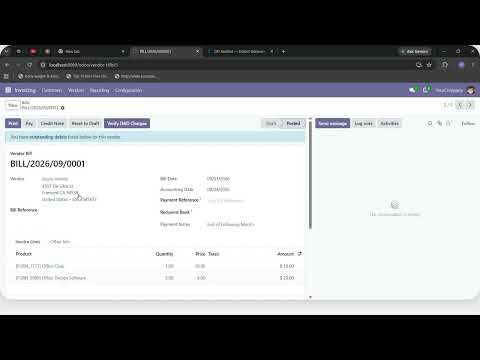

D&D Auditor BridgeAdds a "Verify D&D Charges" button to your Vendor Bills (Invoices). Clicking it opens the D&D Auditor Web Application, securely authenticated against your Odoo session via a shared HMAC-signed token. No data is stored locally in Odoo — this module is a thin, stateless connector.

Odoo D&D Auditor Bridge (2 min)
https://dd-auditor-api.onrender.com).ODOO_HMAC_SECRET configured in the D&D Auditor backend.Open a Vendor Bill (Incoming Invoice). In the header, click the Verify D&D Charges button. A new tab will open the D&D Auditor application, logged in securely on your behalf.
Important: This module is a free connector that requires an active paid tier subscription to the D&D Audit Web Application in order to function. The Odoo module itself is free, but access to the connected audit service is provided under a separate paid subscription.